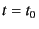

Next: Solvers
Up: NetCDF Interface
Previous: Constructor/Destructor
To set the values to NetCDF data structure,
use the following routines:
- stokes_nc_set_?0 (nc, ?0);
define quantity ``?'' at ,
- stokes_nc_set_time (nc, step, time);
define time for the step ``step'',
- stokes_nc_set_? (nc, step, time, ?);
define quantity ``?'' at (step),
where ``?'' is either
x, u, o, e, f, t, s (for mobile particles), or
xf, uf, of, ef, ff, tf, sf (for fixed particles).
Kengo Ichiki 2008-10-12